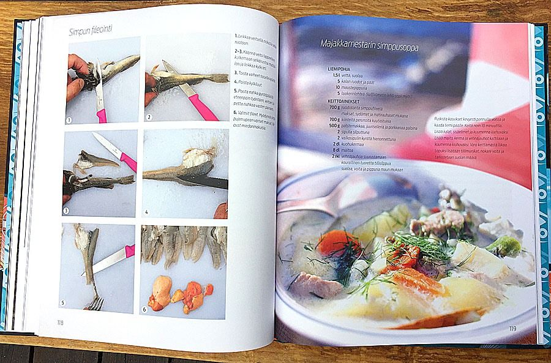
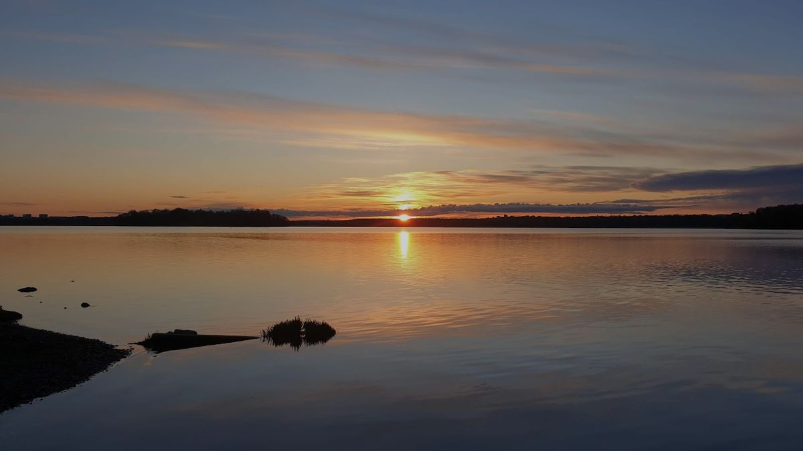
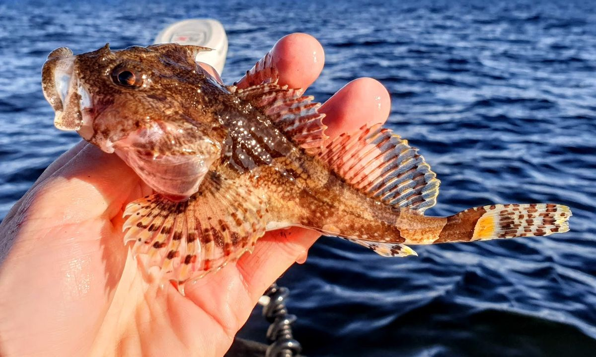
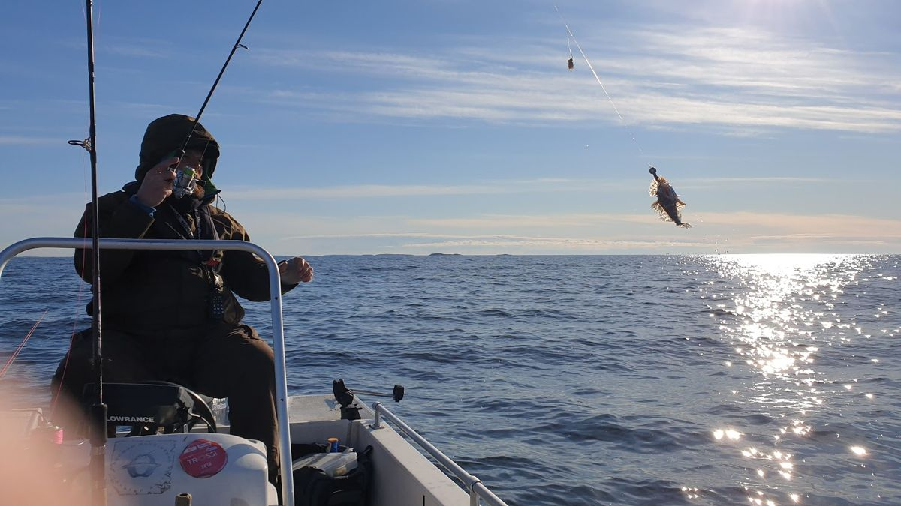
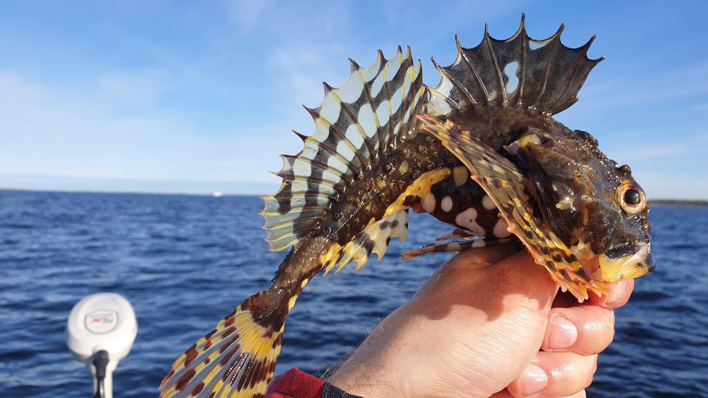
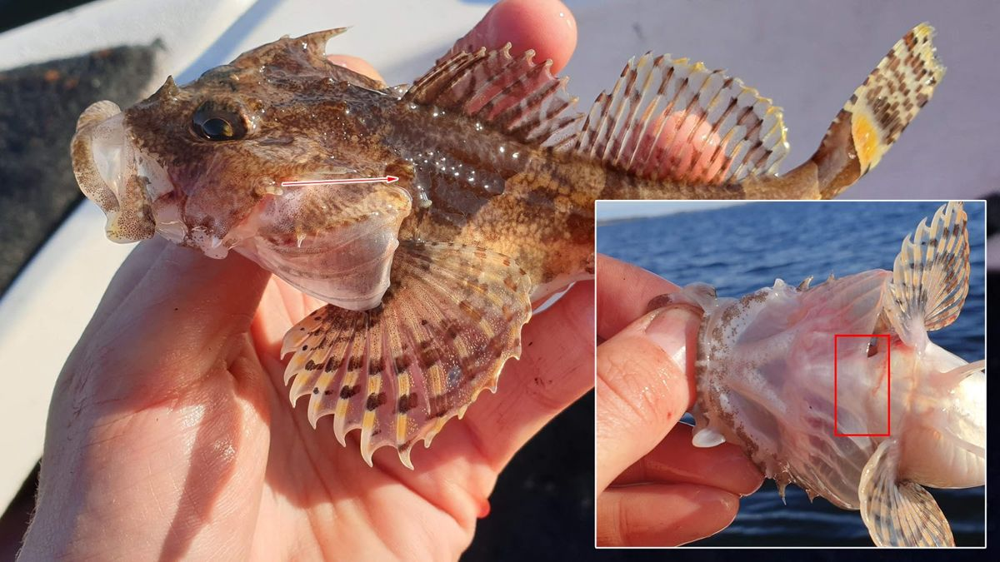

Blogitekstit · Toukokuu 2020
Kalataiteilijan kanssa Helsingin aalloilla – kohteena isosimppu

Isosimppu (Myoxocephalus scorpius) on upea kalalaji kaikessa karuudessaan. Piikit päässä, suhteessa kalaan ylisuuret raidakkaan rinta -ja selkäevät, puna-valko-keltainen maha yhdistettynä tummaan yleisväritykseen. Elämänpisteen lajista sain Märketin -majakkasaarelta retkeltä, jonka tarinan voit lukea tästä.
Tuolle retkelle olin saanut idean kalataiteilija ja graafikko Sakke Yrjölältä johon tutustuin aikana, jolloin hän etsi kalalajeja Suomen kalat -kirjaprojektiin. Muistona näistä auttamisista eteisen seinällä komeilee kirjan kuvituksista pikmenttivedoksina härkäsimppu, mustatokko sekä mutu.
Longinoja Paras luontoteko 2017-2018 palkintona on seinälle päätynyt upea kirkaskylkinen taimen ja Lajikalastuksen Suomen mestaruuskisoissa saatu tummanruskea taimen. Eteisen sisustuksen pääelementit ovat upeaa taidetta.
Upeiden taulujen lisäksi porraskäytävästä löytyy Suomen kalat, meren öttiäiset sekä haukijulisteet tummana ja vaaleana versiona. Saken työt ja kalat elävät perheemme mukanamme joka päivä.


Uusimmassa kirjaprojektissa hän on selvittänyt ruotorakenteita helpottamaan eräksi otettujen kalojen käsittelyä. Tavoitteenaan yleisesti hukkaan menevän sivusaaliin monipuolinen hyödyntäminen. Lisäksi kirjassa esitellään eri tapoja esivalmistella kalaa ja kerrotaan välineistä ja niiden huollosta.
Tein etätoimistossani töitä, kun messengeriin ilmestyy viesti;
”Moi!
Huomenna meen merelle. Kelikin olis pitkästä aikaa optimi simppujen ongintaan.
Seuraava mahis viikon päästä. Silloin vois jo kohta alkaa etsimään nokkakaloja.
Lähtö joskus 10-11 paluu illalla 20.” - Sakke
Päivän työtilanteen stekkaus ja asioiden sopiminen, talvilomapäivä tarjosi ratkaisun. Kalareissu oli sovittu.


Hieman ennen viittä ajoin autoni Verkkosaaren laiturille, avasin oven ja nautin auringon maalaamasta sillasta yli Vanhankaupunginlahden. Näilläkin rannoilla olisi jigaajia viikonlopun Kalamaratonissa, jos kisat olisivat kalenterissa. Hörppäsin kahvia termarista ja näin, kuinka Sakke saapui luiskalle.
Taustalla auton ämyreistä Whitesnake - Here I Go Again säesti tätä upeaa lähtöhetkeä.
And here I go again on my own
Goin' down the only road I've ever known
Like a drifter, I was born to walk alone
And I've made up my mind
I ain't wasting no more time
Olen yrittänyt simppuja vain muutamia tunteja muiden reissujen lomassa ilman tulosta. Kiva nähdä nouseeko, kun todella yrittää ajan kanssa, kertoo Sakke.
Vene veteen, kamat kyytiin ja kohti ulappaa. Tavoitteenamme oli hyödyntää meren armollinen tyyneys ja painaa Päntärille asti. Kallioluodon reunat tippuvat kohtuu nopeasti taso kerrallaan päätyen lopulta yli 20 metrin syvyyksiin. Seilasimme keulamoottorin kyydittämänä luodon reunaa eri syvyyksiltä saamatta kontaktiakaan kaloista.
”Outoa, luulin että tästä niitä olisi noussut.” -Sakke
Kerron, että Espoon edustan simppupaikat ovat olleet pieniä patteja syvien alueiden keskellä. Lowrancen ruudulta löytyy nopeasti ensimmäinen kohde patti ja siirtymä sinne onnistuu ilman keulakoneen nostoa.
”Tässä pitäisi olla 12 metriä, mutta on 17 m. Aloitetaan tästä.” -Sakke
Tiputamme jigilitkamme kohti syvyyksiä ja ei aikaakaan, kun pohjan tuttu kovuus välittyy siiman kautta käsiimme.
”Tärppi!”, mitä se oli kala! Huutaa intopinkeenä Sakke.


Kiristän siimaani ja saan huutaa myös: KALA!
Kammenpyörähdys kerrallaan siima puolautuu Patriotin Fireballin puolalle. Tuntuu kuin kelaus kestäisi ikuisuuden, lopulta saan nostaa ensimmäisen kohdelajin edustajan veneeseen.
Kivet! Tutkimusretkikuntamme on onnistunut tavoitteessaan, simppukunnan edustaja stadin vesiltä, joka ei ole kivisimppu. Kuvien nappaamisen jälkeen myös Sakella tärppää, komea isosimppu nousee kuvattavaksi.
Ensimmäinen simppu mietityttää meitä, voisiko se olla piikkisimppu. Lataan kuvia Facebookin lajikalastajien mekkaan, eli Fongaus-ryhmään ja annan muiden spekuloida lajia.


Jatkoimme seuraavalle pakalle, tyhjää. Mietimme keskenämme, jos tämä olisi ollut ensimmäinen kalakohta voisi usko hiipua. Siirrymme kuitenkin toiselle pakalle ja heti matalampaan siirryttyä tärppää Sakella.


Tuuli nousee eikä ulkomeren reunalla ole suojaa saarista. Päätämme lähteä saariston suojaan ja kalastaa matkalla saarten kupeet taimenten ja nokkakalojen toivossa. Isosaaren länsireuna tarjoaa taimenen kalastajille upeaa rantaa. Kiviä pinnassa ja vedenalla sekä upeat kirkkaat vedet.
Myrkkyhämähäkkejä ja taikauskoa
Historian saatossa banaaneja on pidetty laivoilla ja varsinkin kalastusveneissä huonoa kalaonnea tuovana elementtinä. Taikauskoiset eivät tästä syystä tuo banaania veneeseen, sillä se tietää kalastajalle kalatonta reissua tai jopa eksymistä merellä. Pidemmälle historiaan mennessä merimiehet pelkäsivät, että banaanien mukana tulisi eksoottisia salamatkustajia esimerkiksi myrkyllisiä hämähäkkejä.
Meillä oli mukana yksi banaani, jonka Sakke lopulta söi. Alkoiko nyt kalaonnemme parantua?
Ei aikaakaan, kun Kuusamon Räsäseen, joka on kuvitettu isosimpulla, käy seurimo. Seuraamme hetken, kuinka merten hopeakylki tuijottaa lusikkaa, joka vajoaa Saken tekemän pysäytyksen takia kohti pohjaa. Kala kääntää ylväästi päänsä ja ui pois.
Ja lähes heti perään toinen seurimo, ei kelpaa, vaikka kaikkea kokeillaan.
Ensimmäinen oma kalatapahtuma tulee vasta reunan päädyssä. Kelatessani viehettä kohti venettä käy taimen pärskäyttämässä juuri vieheen noustessa vedestä. Lähellä, mutta niin kaukana.
Yritämme vielä paluumatkalla yhdeltä keskimatalalta härkäsimppuja, mutta kova keli ja yltyvä tuuli pakottaa meidät lähtemään kohti sisäsaaristoa. Saariston suojassa käymme läpi muutaman taimenspotin, emmekä ole ainoat. Suositut paikat vaatisivat taas jonotusnumeron.
Entä se toinen simppu, oliko uusi elis vai ei?


”Sivukuvasta näkyy, ettei tuo pisin piikki yletä kiduskannen reunaan asti (puna-valkoinen nuoli) ja tosiaan tuo kiduksia suojaava kalvo on alapuolen reunasta irtonainen (punainen neliö).
Kyllä tuokin noilla perusteilla on isosimppu. Tosin melko väritön ja alapuolen reunoissa ei näy usein lajille tyypillisiä valkeita pallomaisia kuviota. Olivatko muut vielä värikkäämpiä?
Selkäevän ruotojen määräkin sopii kyllä isosimppuun. Jos viitsit niin laita kalahavaintoihin ilmoituksia, varsinkin jos eivät sovi siellä jo oleviin paikkoihin. Kaikki havainnot ovat tervetulleita kalahavaintoihin.
Sieltähän löytyy myös vinkkejä piikkisimppuhavainnoista.”
Terveisin
Lauri Urho, Luonnonvarakeskus
Tein kuten Lauri toivoi, isosimppuspotti on nyt Kalahavainnot.fi -palvelussa viranomaisten ja fongareiden ilona. Kiitos tunnistusavusta Lauri.
Lajeja kasassa 34, seuraavaksi kutsuu Hanko ja nokkakalajahti Timin kanssa. Jotain ainutlaatuista ja eksoottista luvassa.
Seuraa ennätyksen etenemistä
Pidän kirjaa lajilistasta ja tarkemmasta retkidatasta Google -taulukossa, joka löytyy jokaisesta ennätysyrityksen postauksesta. Tästä linkistä taulukko avautuu uuteen ikkunaan.
Seurantatilanne löytyy myös blogini oikeasta yläreunasta.
Vuoden aikana ennätysyrityksessä kulkee mukaan myös tämä kalataitelija-graaffikko Sakke Yrjölän suunnittelema SPECIES FIN 53 -merkki.
Paitakulmassa painatin pipoon ja lippikseen saman merkin. Tavoitteeni on saada aikaiseksi 53 saaliskuvaa tekstin alussa tekemääni taulukkoon joissa kaikissa kuvissa näkyisi tuo kyseinen tunnus.
Paitakulma on Suomalainen perheyritys, joka haluaa panostaa laatuun ja asiakastyytyväisyyteen. Tutustu yrityksen palveluihin tästä.